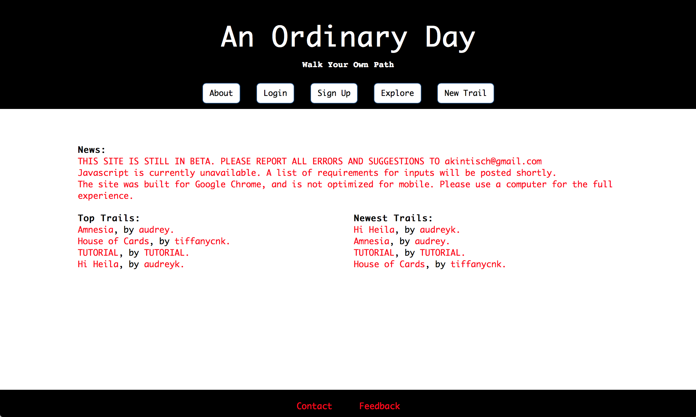
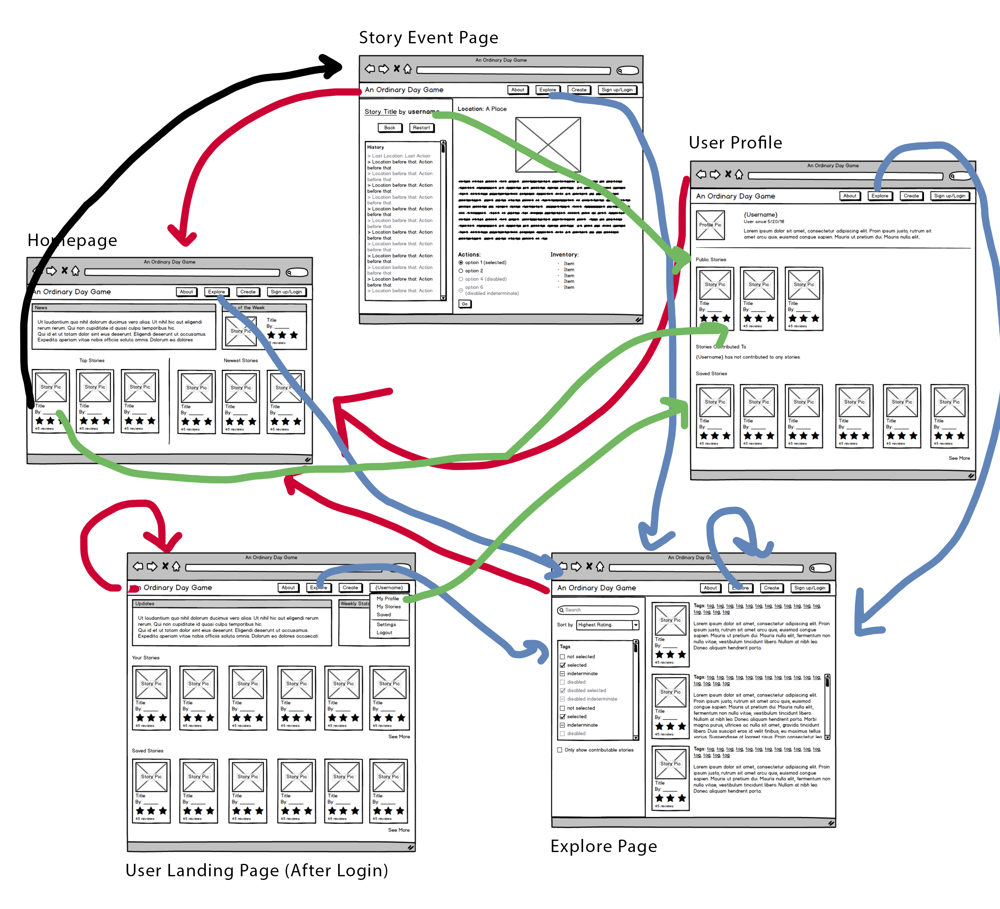
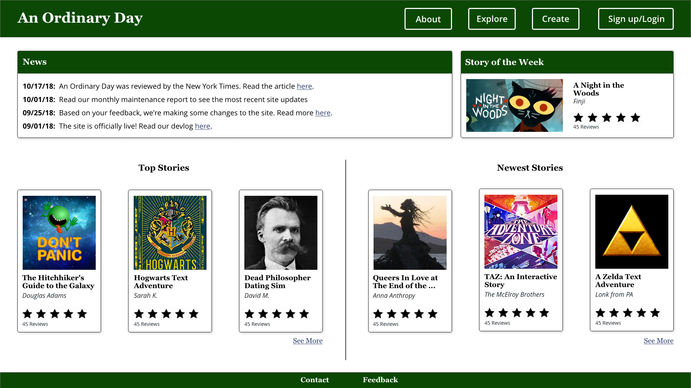
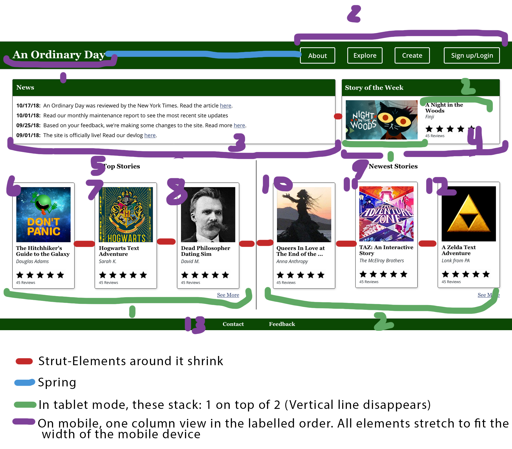

Redesigning "An Ordinary Day"
Why?
An Ordinary Day is a collaborative text adventure website that I built my senior year of high school. It was the first full website that I ever built, and… it shows. The design is less than stellar, with confusing instructions, a complete lack of a color scheme, and little to no layout structure.
Now that I have a better idea of what I’m doing, I thought it would be a fun experiment to redesign the site. It’s a cool way to see how much I’ve improved over the years, and a way to give back, in a sense, to the site that first sparked my passion for computer science. I focused my efforts on increasing the usability of the site and improving the visual design.

Research
Usability
I applied the concepts we learned in class to identify usability issues with the website. The six usability criteria I looked are were: intuitive design, ease of learning, efficiency of use, memorability, error frequency and severity, and subjective satisfaction.
- Analyzing the site for intuitive design, I found that the menu bar on the original site is clear, for the most part, but the “trail” metaphor is confusing. That aside, from the menu bar it is clear to see that the site revolves around user creation and sharing, and if users are curious about the details, they can read the “About” page.
The worst offense is probably the user profile page: the layout does not make sense. It is hard to tell which cells in the table are the content, which are the headers, and which headers match with which content.
- The overall ease of learning for the story event page is good. The available actions and action button are clearly labelled, as well as the inventory. Basic navigation from page to page is manageable. However, figuring out where you have been is difficult, if not impossible.
- As for efficiency of use, the search tools are simple, which makes them easy to use. However, it makes finding specifically what you want an annoyingly long process. If you don’t remember the specific tag you want exactly, you have to scroll through all of the stories until you find it. Also, you can only filter by tags, rather than by author or story content. You also can’t combine search conditions, which means a lot of unnecessary scrolling for users.
- In terms of memorability, the memorability of the site is good, due to its simplicity. Aside from the trail metaphor, most things are labelled well and follow website standards, such as the login/logout system and button structure.
- Error frequency and severity is mild. One of the biggest errors users may make is accidentally selecting the wrong action when navigating a story. However, in the site there is a “back” button, so it is easily fixed. Another error occurs if a user mistypes a tag name when they’re searching, which can be frustrating, but is not severe.
- Last, for subjective satisfaction, the system looks bare-bones and unforgiving, which can be grating for users. Some layout decisions are misleading, such as the user profile page table, but overall users are able to figure out what is going on. They may feel like they are “putting up” with bad visual design, though, when they use the site.
Visual Design
I applied the concepts we learned in class to determine the visual design issues with the site. First, the website does not have a consistent grid layout. Even within pages, elements do not line up. Additionally, the original color scheme is off-putting. It is hard to tell what is important and what is not, since most of the text is red. Last, the techy, monospace typeface is hard to read, does not fit with the literary nature of te site, and in general, does not look good.
Usability Redesign
To start, I created wireframes for five of the main pages for An Ordinary Day. I drew arrows connecting all the pages together, except for all of the story cards–it would get too confusing. For each story card, clicking on the image or title leads to the story, but clicking on the username leads to the author’s profile.

This redesign addresses the issues found with the six usability criteria mentioned above.
- In terms of intuitive design, in the redesigned interface, the “New Trail” button is replaced by “Create,” which is simpler and easier to understand. In fact, the whole “trail” metaphor is scrapped. Also, by featuring and labelling “stories” on the homepage, users know instantly that this is a literary website.
For the user profile page, I got rid of the table entirely. I replaced it with an instagram-style bio, and clearly labelled lists related to the user. The lists of stores created to, contributed to, and saved are listed individually, and are styled the same way so it is clear that they are all lists of stories.
- To improve ease of learning, I made it easier to retrace your steps through the text adventure story by including a sidebar with a list of previous locations and actions taken at those locations. Users can click on a history item to be taken to that place in the story, which makes nonlinear navigation easier (or rather, possible).
- With the new interface, efficiency of use is also enhanced. The search conditions can be more fine-tuned. A generic search bar allows users’ search queries to cover author and content, as well as tags. Common tag filters have been moved to a checkbox system below, which allows users to select specific tags quickly, as well as prevents typos. Users can select as many tags as they want at the same time, and tag selection can be used in combination with conditions from the search bar. Therefore, users can find what they want quickly and easily.
- There was not much changed in terms of memorability: I tried to keep things as simple as possible in my redesign, so the memorability should still be good.
- For error frequency and severity, on the explore page, users select common tags with the checkbox system instead of typing them out, which prevents typos. As such, error frequency and severity is decreased.
- Last, subjective satisfaction is greatly improved in the redesigned interface. The site is better structured. I present information more clearly, and I address some annoying UI components of the original site. As such, users will find it more enjoyable to interact with.
Visual Redesign
General Design
Next, I made a high-fidelity mockup of the homepage to illustrate what an updated version of An Ordinary Day might look like.

First of all, I implemented a grid layout in order to better organize the information on the page. The structure is visually more appealing than that of the original site. The layout spaces out the information, which fills the space better and allows each piece of information to receive more attention. Next, I updated the color scheme. The original color scheme was off-putting, and it was hard to tell what was important and what was not, since most of the text was red. My redesign retains the simplistic feel of the original site by using a restricted color palette, but still adds color and interest. I used paletton’s adjacent colors settings to pick a neighboring color as a secondary color to use for the links. I decided to let the font type and weight be a signifier for importance, rather than color. By bolding and changing the font of important text instead of changing the color to red, it is easier for users to find important information and to navigate the page. Not to mention, I switched the font to from a techy monospace to a scholarly Georgia and Open Sans combo, based off of the Barnes and Noble website, to create a literary feel. I used bold Georgia to represent important text, and Open Sans for details.
Adding Responsiveness
Once I had the visual design for the desktop version of An Ordinary Day’s homepage, I kept working to make it responsive. As the wide version shrinks, I decided that the space between elements would stay the same, and the elements themselves would shrink. My reasoning was that as the page shrinks, I wanted some part of the page to remain static to give the users a sense of orientation. I chose the spacing to remain static over the elements because resizing spacing does not allow the page to shrink that much: it doesn’t take long before the elements are touching. The elements themselves, though, contain a lot of white space, and as such are able to shrink more than the spacing. When the window is small enough that the elements look squished together, I decided to reorder some of the elements so that they would stack vertically, instead of horizontally. This way, the order of importance of information on the page stays the same, but the elements have enough room to be represented on the page. Finally, when the page shrinks so that even that width is too small for the elements to be displayed, the layout switches to a one-column view. The order stays the same as if you look at the elements left-to-right on the website, so importance and orientation are still maintained.

Conclusion
TO DO!!!